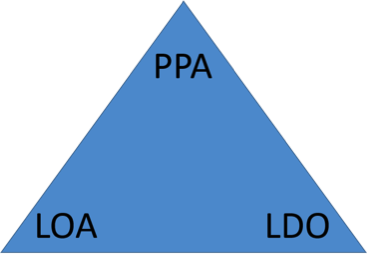

Primeiros passos para captar com Governos
21 de Agosto de 2017 às 07:00
Todos queremos fórmulas prontas que nos facilitem a captação de recursos, principalmente a captação com Governos. O primeiro passo para captar com Governos, que é a proposta do nosso título, não é uma fórmula, mas um Pontapé ou reflexões iniciais, para que você, através da Organização que participa, construa seu próprio jeito, modelo ou processo de captar recurso.
Importante observar que a política social brasileira nos últimos anos, tem se voltado para novos processos de redemocratização, buscando uma reforma do Estado e um modelo de gestão pública mais aberta às necessidades dos cidadãos brasileiros, mais voltado para o interesse público e mais eficiente na coordenação da economia e dos serviços públicos. Acredito que estamos evoluindo, apesar de um cenário obscuro da nossa política partidária brasileira.
E por observar esse movimento, temos também que nos movimentar, acompanhar o cenário político brasileiro e saber como podemos caminhar em uma parceria mutua. Então já posso fazer o meu o primeiro questionamento: A sua organização está preparada para gerenciar recursos públicos? Importante ser sincero na resposta, não basta somente captar recursos público por ter recurso disponível, precisa trazer resultados. Para saber se tem capacidade, faça um breve histórico dos projetos e programas, avalie, veja os resultados, mensure-os, apresente suas experiências e expertises, desenvolva seu portfólio e relatório de atividades. Discuta sempre com a Diretoria para saber há interesse em firmar parceria com o Governo.
Não podemos esquecer que a captação de recurso com o governo tem passado por uma breve restruturação, não vamos abordar sobre as novas formas de parceria sem citar ou falar sobre o Marco Regulatório das Organizações da Sociedade Civil, Lei Federal 13.019/2014 que, já de cara informo, em seu Art. 33, apresenta requisitos para celebrar parceria com o Governo, seja no âmbito Municipal, Estadual ou Federal. Mas esse assunto vamos deixar para um próximo encontro. Quero aqui focar nos interesses mútuos entre a Organização da Sociedade Civil (OSC) e o Governo.
Quero acreditar que no questionamento anterior, você tenha respondido da seguinte forma “SIM, temos capacidade para gerenciar recursos públicos, e estamos prontos para trazer bons resultados a sociedade brasileira”, parabéns, vamos ao próximo passo ou próximos questionamentos. A sua Organização tem Planejamento Estratégico? Importantíssimo ter um plano definido da Organização, como o Governo poderá ter a certeza de que traz resultados se não planeja suas ações.
Sempre tive um olhar simplificado para o planejamento, de modo que posso nesse momento sugerir que pegue um lápis e papel, reúna os membros da organização e realize a seguinte dinâmica, fazendo três perguntas:
Onde nós estamos? Isto é, que tipo de Organização nós somos, quais são nossos problemas, nossos recursos, pontos fortes e pontos fracos? A análise dessas e de outras questões similares é o primeiro passo do planejamento, por que, se não sabemos onde estamos, quem somos nós, não sabemos onde podemos ir.
Onde queremos ir? Que tipo de Organização queremos ser no futuro? Quais são nossas grandes metas? Em que seguimento ou projeto pretendemos atuar? Precisamos saber com clareza onde queremos ir, para então definir alternativas que nos levem a atingir esses alvos futuros.
Como chegar lá? Trata-se de escolher os caminhos através dos quais julgamos que atingiremos nossos objetivos. O que fará para alcançar os objetivos traçados pela Organização.
O planejamento estratégico dá o rumo, a direção geral dos esforços e recursos da Organização.
Com o Planejamento Estratégico da Organização, temos que caminhar para o próximo passo ou questionamento. Sabe quais são os planos que do Governo? Esse questionamento tenho feito as organizações, e fico triste com as respostas, pois boa parte não sabem o que o Governo Municipal, Estadual ou Federal está planejando. Esse passo é importantíssimo, pois não adianta querer firmar uma parceria com o Governo ou ficar esperando um Edital cair do Céu, se não saber o que o Governo está pensando. Como irá alinhar o seu Planejamento com o do Governo?
Para que o poder público possa desempenhar suas funções com critério, é necessário que haja um planejamento orçamentário consistente, que estabeleça com clareza as prioridades da gestão. Quanto gastar em saúde? E em educação? Será que é preciso aumentar os investimentos na Assistência?
É para esse fim que a própria Constituição Federal de 1988 introduziu um modelo orçamentário para a gestão do dinheiro público no Brasil (veja o artigo 165). O modelo consiste basicamente de três documentos. Você conhece as seguintes siglas ou sopa de letrinhas: PPA; LOA; LDO. Essas três siglas que definem o orçamento dos Governos, sejam eles Municipal, Estadual ou Federal. Essa sopa de letras, gosto de chama-la de Triangulo de Gestão Orçamentária, como apresentado na figura abaixo.
Importante observar que a política social brasileira nos últimos anos, tem se voltado para novos processos de redemocratização, buscando uma reforma do Estado e um modelo de gestão pública mais aberta às necessidades dos cidadãos brasileiros, mais voltado para o interesse público e mais eficiente na coordenação da economia e dos serviços públicos. Acredito que estamos evoluindo, apesar de um cenário obscuro da nossa política partidária brasileira.
E por observar esse movimento, temos também que nos movimentar, acompanhar o cenário político brasileiro e saber como podemos caminhar em uma parceria mutua. Então já posso fazer o meu o primeiro questionamento: A sua organização está preparada para gerenciar recursos públicos? Importante ser sincero na resposta, não basta somente captar recursos público por ter recurso disponível, precisa trazer resultados. Para saber se tem capacidade, faça um breve histórico dos projetos e programas, avalie, veja os resultados, mensure-os, apresente suas experiências e expertises, desenvolva seu portfólio e relatório de atividades. Discuta sempre com a Diretoria para saber há interesse em firmar parceria com o Governo.
Não podemos esquecer que a captação de recurso com o governo tem passado por uma breve restruturação, não vamos abordar sobre as novas formas de parceria sem citar ou falar sobre o Marco Regulatório das Organizações da Sociedade Civil, Lei Federal 13.019/2014 que, já de cara informo, em seu Art. 33, apresenta requisitos para celebrar parceria com o Governo, seja no âmbito Municipal, Estadual ou Federal. Mas esse assunto vamos deixar para um próximo encontro. Quero aqui focar nos interesses mútuos entre a Organização da Sociedade Civil (OSC) e o Governo.
Quero acreditar que no questionamento anterior, você tenha respondido da seguinte forma “SIM, temos capacidade para gerenciar recursos públicos, e estamos prontos para trazer bons resultados a sociedade brasileira”, parabéns, vamos ao próximo passo ou próximos questionamentos. A sua Organização tem Planejamento Estratégico? Importantíssimo ter um plano definido da Organização, como o Governo poderá ter a certeza de que traz resultados se não planeja suas ações.
Sempre tive um olhar simplificado para o planejamento, de modo que posso nesse momento sugerir que pegue um lápis e papel, reúna os membros da organização e realize a seguinte dinâmica, fazendo três perguntas:
Onde nós estamos? Isto é, que tipo de Organização nós somos, quais são nossos problemas, nossos recursos, pontos fortes e pontos fracos? A análise dessas e de outras questões similares é o primeiro passo do planejamento, por que, se não sabemos onde estamos, quem somos nós, não sabemos onde podemos ir.
Onde queremos ir? Que tipo de Organização queremos ser no futuro? Quais são nossas grandes metas? Em que seguimento ou projeto pretendemos atuar? Precisamos saber com clareza onde queremos ir, para então definir alternativas que nos levem a atingir esses alvos futuros.
Como chegar lá? Trata-se de escolher os caminhos através dos quais julgamos que atingiremos nossos objetivos. O que fará para alcançar os objetivos traçados pela Organização.
O planejamento estratégico dá o rumo, a direção geral dos esforços e recursos da Organização.
Com o Planejamento Estratégico da Organização, temos que caminhar para o próximo passo ou questionamento. Sabe quais são os planos que do Governo? Esse questionamento tenho feito as organizações, e fico triste com as respostas, pois boa parte não sabem o que o Governo Municipal, Estadual ou Federal está planejando. Esse passo é importantíssimo, pois não adianta querer firmar uma parceria com o Governo ou ficar esperando um Edital cair do Céu, se não saber o que o Governo está pensando. Como irá alinhar o seu Planejamento com o do Governo?
Para que o poder público possa desempenhar suas funções com critério, é necessário que haja um planejamento orçamentário consistente, que estabeleça com clareza as prioridades da gestão. Quanto gastar em saúde? E em educação? Será que é preciso aumentar os investimentos na Assistência?
É para esse fim que a própria Constituição Federal de 1988 introduziu um modelo orçamentário para a gestão do dinheiro público no Brasil (veja o artigo 165). O modelo consiste basicamente de três documentos. Você conhece as seguintes siglas ou sopa de letrinhas: PPA; LOA; LDO. Essas três siglas que definem o orçamento dos Governos, sejam eles Municipal, Estadual ou Federal. Essa sopa de letras, gosto de chama-la de Triangulo de Gestão Orçamentária, como apresentado na figura abaixo.

Vamos decifrar esse triangulo de gestão e qual a sua importância. Os conceitos de definição do PPA, LDO e LOA foram extraídos do site do Ministério do Planejamento, Desenvolvimento e Gestão. Onde você poderá consultar e ter acesso aos dados do orçamento federal brasileiro.
Plano Plurianual – PPA
É o documento que traz as diretrizes, objetivos e metas de médio prazo da administração pública. Prevê, entre outras coisas, as grandes obras públicas a serem realizadas nos próximos anos. Ele tem vigência de quatro anos, portanto deve ser elaborado criteriosamente, imaginando-se onde se quer chegar nos próximos quatro anos. Expressa a visão estratégica da gestão pública.
O PPA inclui uma série de programas temáticos, em que são colocadas as metas (expressas em números) para os próximos anos em diversos temas. Um PPA sempre começa a vigorar a partir do segundo ano do mandato, terminando no primeiro ano do mandato seguinte.
Lei de Diretrizes Orçamentária – LDO
A LDO é elaborada anualmente e tem como objetivo apontar as prioridades do governo para o próximo ano. Ela orienta a elaboração da Lei Orçamentária Anual, baseando-se no que foi estabelecido pelo Plano Plurianual. Ou seja, é um elo entre esses dois documentos.
Pode-se dizer que a LDO serve como um ajuste anual das metas colocadas pelo PPA. Algumas das disposições da LDO são: reajuste do salário mínimo, quanto deve ser o superávit primário do governo para aquele ano e ajustes nas cobranças de tributos. É também a LDO que define a política de investimento das agências oficiais de fomento, como o BNDES.
Enquanto o PPA é um documento de estratégia, pode-se dizer que a LDO delimita o que é e o que não é possível realizar no ano seguinte.
Lei Orçamentária Anual – LOA
É o orçamento anual propriamente dito. Prevê os orçamentos fiscal, da seguridade social e de investimentos das estatais. Todos os gastos do governo para o próximo ano são previstos em detalhe na LOA. Você encontrará na LOA a estimativa da receita e a fixação das despesas do governo. É dividida por temas, como saúde, educação e assistência. Prevê também quanto o governo deve arrecadar para que os gastos programados possam de fato ser executados. Essa arrecadação se dá por meio dos tributos (impostos, taxas e contribuições). Se bem-feita, a LOA estará em harmonia com os grandes objetivos e metas estabelecidos pelo PPA.
Vale notar que todos os três níveis de Governo elaboram seus próprios documentos orçamentários, já que cada um possui suas próprias despesas e responsabilidades. Então é importante ficar atento no que o Governo está pensando, planejando e realizando.
Bem, agora que já estamos atentos ao que o Governo está pensando, não tem como querer captar recurso Governamental sem obter informações orçamentárias, seria gastar munições em tiros n’água.
Temos consciência da importância do planejamento a Missão, Visão e Valores, sabemos dos planos do Governo e a partir de agora, como proceder? Trago algumas formas de parcerias possíveis com o Governo: Chamamento Público, Emenda Parlamentar, Dispensa ou Inelegibilidade.
Em qualquer umas dessas formas, ao solicitar algum tipo de parceria Governamental, esteja preparado para relação de documentos que serão solicitados. Muitos desses documentos já fazem ou deveriam fazer parte da rotina da Organização. Por isso, é extremamente importante que a OSC ao longo do exercício de suas atividades mantenha seus arquivos sempre atualizados e organizados. Dentre os documentos que são solicitados (podem variar dependendo do tipo de parceria) destacam-se:
- Estatuto social atualizado ou normas internas da Organização que preveja:
- Objetivos voltados à promoção de atividades e finalidades de relevância pública e social;
- Que, em caso de dissolução da entidade, o respectivo patrimônio líquido seja transferido a outra pessoa jurídica de igual natureza que preencha os requisitos desta Lei e cujo objeto social seja, preferencialmente, o mesmo da entidade extinta; e
- Escrituração de acordo com os princípios fundamentais de contabilidade e com as Normas Brasileiras de Contabilidade.
- Possuir:
- No mínimo, um, dois ou três anos de existência, com cadastro ativo, comprovados por meio de documentação emitida pela Secretaria da Receita Federal do Brasil, com base no Cadastro Nacional da Pessoa Jurídica - CNPJ, conforme, respectivamente, a parceria seja celebrada no âmbito dos Municípios, do Distrito Federal ou dos Estados e da União, admitida a redução desses prazos por ato específico de cada ente na hipótese de nenhuma organização atingi-los;
- Experiência prévia na realização, com efetividade, do objeto da parceria ou de natureza semelhante;
- Instalações, condições materiais e capacidade técnica e operacional para o desenvolvimento das atividades ou projetos previstos na parceria e o cumprimento das metas estabelecidas;
- Certidões de regularidade fiscal, previdenciária, tributária, de contribuições e de dívida ativa, de acordo com a legislação aplicável de cada ente federado;
- Certidão de existência jurídica expedida pelo cartório de registro civil ou cópia do estatuto registrado e de eventuais alterações ou, tratando-se de sociedade cooperativa, certidão simplificada emitida por junta comercial;
- Cópia da ata de eleição do quadro dirigente atual;
- Relação nominal atualizada dos dirigentes da entidade, com endereço, número e órgão expedidor da carteira de identidade e número de registro no Cadastro de Pessoas Físicas - CPF -, da RFB de cada um deles; e
- Comprovação de que a organização da sociedade civil funciona no endereço por ela declarado.
Ao iniciar qualquer captação de recursos, seja ela com o Governo ou no setor privado, é preciso debater internamente com os líderes da Organização, para que a política da Organização não se desvirtue pelo interesse do recurso.
Você viu aqui como dar os primeiros passos para isso. Mas não esqueça: organização, planejamento e um projeto alinhando com os interesses mútuos são fundamentais para conquistar a parceria com o Governo.
Bons Frutos na Captação de Recursos.
Adm. Rafael Vargas. Chefe de núcleo do terceiro setor da Superintendência estadual de assuntos estratégicos. Presidente do instituto norte Amazônia de apoio ao terceiro setor. Membro da Associação Brasileira de Captadores de Recursos em São Paulo. ABC. Empreendedor social. Gestor de projetos. Captador de recursos e membro multiplicador da REDE SICONV do Estado de Rondônia.
Referência:
Recriar.com.você - Saiba como captar recursos para a sua ONG. Acessando em: 27 de julho de 2017
Publicado por

Notícias mais populares
Gestão
Em agosto de 2017, a revista ÉPOCA e o Instituto Doar divulgaram a primeira ediç&...
Contexto e tendências
Criado para tornar mais transparentes as parcerias entre a administração públic...
Profissional captador
A captação de recursos é fundamental para a sustentabilidade de uma organiza&cc...